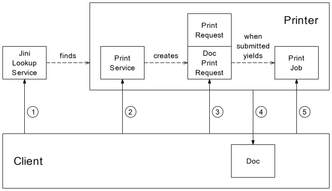
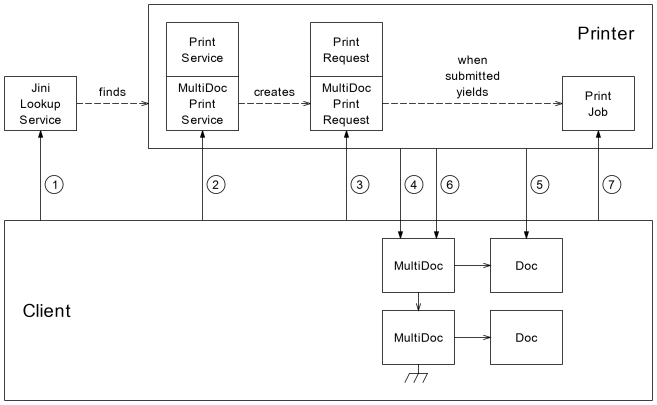

The Jini Print Service
provides a printing service
to a Jini federation.
Draft Standard Version 1.0
of the Jini Print Service API
represents the first version
released from the Jini Printing Working Group
to the entire Jini Community.
It is denoted a "draft standard"
so developers can create Jini Print Service implementations and clients
based on a common standard.
It is denoted a "draft standard"
to recognize that implementation experience
may necessitate changing the API
before finalizing it as a full standard.
To learn about the Jini Print Service,
the following course of study is recommended:
-
Read this Overview.
-
Work through the Tutorial
to see a detailed description
of how to use the Jini Print Service.
-
Browse the documentation for the Jini Print Service API's
packages, interfaces, and classes.
Package Organization
The Jini Print Service is organized into five major divisions.
See the package documentation referenced below for further information.
-
Print Service Lookup --
Lets clients search for print services
via standard Jini Lookup Service (JLUS) attributes
stored in one or more
Entry objects.
See package net.jini.print.lookup.
-
Print Service --
Abstraction of a printer; creates Print Job objects.
A Print Service object is registered into the JLUS
as the service proxy object.
See package net.jini.print.service.
-
Print Job --
Abstraction of a print job; performs actual printouts.
See package net.jini.print.job.
-
Print Data --
Abstraction of a piece of print data;
provided by a client for a Print Job to obtain the print data.
See package net.jini.print.data.
-
Print Events --
Events reported to a client
pertaining to a change of state of a Print Service
or the progress of processing of a Print Job.
See package net.jini.print.event.
Four additional packages are used in
the Jini Print Service API.
However, these packages are not part of
the Jini Print Service API.
Rather, they exist in the javax.print namespace
so that they can be used
both by the Jini Print Service API
and by the Unified Printing API
(Java Specification Request
JSR-000006).
See the package documentation referenced below for further information.
-
Package javax.print.attribute
contains classes and interfaces
that pertain to printing attributes in general.
Attributes are used in several areas
of the Jini Print Service API for various purposes,
including discovering printer capabilities,
specifying print data characteristics,
specifying job settings,
and others.
-
Package javax.print.attribute.standard
contains classes for specific printing attributes.
-
Package javax.print.data
contains classes and interfaces for providing print data.
-
Package javax.print.exception
contains exception classes and interfaces.
The following package is not part of the Jini Print Service API,
but is provided for the convenience of client developers.
Objects and Interactions
Here is a brief, high-level sketch
of the objects involved in using a Jini Print Service instance
and the interactions among them.
Single Doc Print Jobs

The above interaction diagram
shows the interfaces involved
in printing a job
consisting of just one doc.
("Doc" is a short, easy-to-pronounce term
that means "a piece of print data.")
The Jini Print Service instance
supplies the Print Service, Print Request, and Print Job objects,
and the client supplies the Doc object.
-
The client searches the Jini Lookup Service (JLUS)
for a Jini Print Service instance,
and the JLUS returns a Print Service object
which implements the base interface
PrintService.
(See package net.jini.print.lookup.)
-
The client calls a method in interface
PrintService
telling the printer
to create a Print Request to print a single Doc.
The printer then returns
a Print Request object
which implements interface
DocPrintRequest
as well as the base interface
PrintRequest.
(See package net.jini.print.service.)
-
The client calls methods in interfaces
PrintRequest and
DocPrintRequest
to specify the doc object to be printed
and a set of job-level printing attributes to use for the job.
The client can also register event listeners
to receive event notifications for the job.
Finally, the client calls a method to submit the Print Request
to be printed,
and the printer returns a Print Job object
which implements interface
PrintJob.
(See package net.jini.print.job.)
-
The printer calls methods in interface
Doc
to obtain the print data format,
the document-level printing attributes,
and the actual print data,
then proceeds to print the job.
(See package net.jini.print.data.)
-
The client calls methods in interface
PrintJob
to monitor the Print Job's progress
and control the Print Job as the printer processes it.
The client can also register event listeners
to receive event notifications for the job.
Alternatively,
if the client doesn't need to monitor or control the job,
the client can simply disregard the returned Print Job object.
(See package net.jini.print.job.)
Multiple Doc Print Jobs

The above interaction diagram
shows the interfaces involved
in printing a job
consisting of more than one doc -- a "multidoc."
It is much the same as the previous scenario,
except a few different interfaces are involved.
-
The client searches the Jini Lookup Service (JLUS)
for a Jini Print Service instance,
and the JLUS returns a Print Service object
which implements interface
MultiDocPrintService
as well as the base interface
PrintService.
(See package net.jini.print.lookup.)
-
The client calls a method in interface
MultiDocPrintService
telling the Print Service
to create a Print Request to print a MultiDoc.
The printer then returns
a Print Request object
which implements interface
MultiDocPrintRequest
as well as the base interface
PrintRequest.
(See package net.jini.print.service.)
-
The client calls methods in interfaces
PrintRequest and
MultiDocPrintRequest
to specify the multidoc object to be printed
and a set of job-level printing attributes to use for the job.
The client can also register event listeners
to receive event notifications for the job.
Finally, the client calls a method to submit the Print Request
to be printed,
and the printer returns a Print Job object
which implements interface
PrintJob.
(See package net.jini.print.job.)
-
The multidoc provides a "linked list view"
of the docs to be printed.
The printer calls a method in interface
MultiDoc on the current multidoc object
to get the current doc to be printed.
(See package net.jini.print.data.)
-
The printer calls methods in interface
Doc
on the current doc object
to obtain the print data format,
the document-level printing attributes,
and the actual print data.
(See package net.jini.print.data.)
-
The printer calls a method in interface
MultiDoc on the current multidoc object
to get the next multidoc object,
and repeats from Step 4 until it has gotten all the docs.
The printer then proceeds to print the job consisting of all the docs.
(See package net.jini.print.data.)
-
The client calls methods in interface
PrintJob
to monitor the Print Job's progress
and control the Print Job as the printer processes it.
The client can also register event listeners
to receive event notifications for the job.
Alternatively,
if the client doesn't need to monitor or control the job,
the client can simply disregard the returned Print Job object.
(See package net.jini.print.job.)
Tutorial
Now work through the
Tutorial
to see a detailed description
of how to use the Jini Print Service.
To view the Tutorial, your browser must support frames.
Contacts
The Jini Print Service API
is being developed by the Jini Printing Working Group (JPWG).
The JPWG's online document repository,
including several draft versions of the API
and the Jini Print Service API Issues List,
is available on the jini.org web site at
http://developer.jini.org/exchange/users/jpgwg/.
The JPWG's email distribution list is
jini-printing@jini.org.
Archives of the email DL are at
http://developer.jini.org/cgi-bin/wilma/jini-printing.
Please post comments and discussion about the Jini Print Service API
on the jini-printing@jini.org DL.
The Jini Print Service API documentation editor is Alan Kaminsky
(akaminsky@crt.xerox.com).
Revision History
Draft Standard Version 1.0 (23-May-2000)
Draft Version 24-Mar-2000
Draft Version 07-Feb-2000
Draft Version 17-Jan-2000
Draft Version 23-Dec-1999
Draft Version 15-Nov-1999
Draft Version 10-Nov-1999
Draft Version 04-Nov-1999
Draft Version 28-Oct-1999
DRAFT STANDARD VERSION 1.0 (23-MAY-2000)